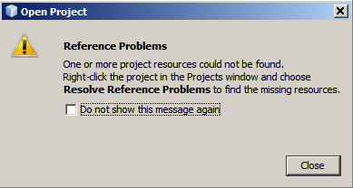

Contenidos

Para completar este tutorial, usted necesita los siguientes recursos y software.
| Software o recursos | Versión requerida |
|---|---|
| NetBeans IDE | versión 6.5 |
| Java Development Kit (JDK) | versión 6 or versión 5 |
El IDE NetBeans 6.5 introduce un mejor asistente para importar proyectos de Eclipse. Este asistente le permite utilizar NetBeans para trabajar con Java en aplicaciones de escritorio y proyectos web que se han creado en Eclipse y MyEclipse.
Después de crear un proyecto en NetBeans desde un proyecto de Eclipse, puede trabajar de las siguientes maneras:
Al importar un proyecto, el IDE analiza los metadatos del proyecto de Eclipse y, a continuación, NetBeans crea un proyecto basado en esos metadatos. Importar un proyecto no impone cambios en la estructura del proyecto de Eclipse, de modo que no interfiere en la forma en que Eclipse trabaja.
Una vez que tenga importado el proyecto, puede usar los IDEs NetBeans y Eclipse, uno o ambos para editar, crear, ejecutar, depurar, y el perfil del proyecto. Si usted hace un cambio de configuración en el proyecto de Eclipse, puede resincronizar el proyecto en NetBeans. Esto le permite trabajar en proyectos, incluso en NetBeans si todo el mundo en su equipo está trabajando con Eclipse. La construcción de camino que se estableció en Eclipse sigue siendo el camino maestro de la construcción para el proyecto.
Para importar a NetBeans un proyecto de Eclipse:
Normalmente, este proyecto ya estaría en el espacio de trabajo de Eclipse en su sistema.
Normalmente, es mejor almacenar los datos del proyecto de NetBeans dentro de las carpetas de Eclipse. En la mayoría de los casos, esto significa que los metadatos del proyecto de NetBeans se refieren a las fuentes y las bibliotecas con los mismos caminos que son utilizados por Eclipse. Por lo tanto, el acceso al proyecto mediante un sistema de control de versión en diferentes máquinas debería traducirse en un comportamiento similar tanto en NetBeans y Eclipse.
Ver Archivos del Proyecto de NetBeans. A continuación una lista de archivos y carpetas que crea NetBeans.
Después de completar el asistente, pueden aparecer los siguientes cuadros de diálogo:
Puede copiar la información de este cuadro de diálogo y pegarlo en otro lugar para su futura referencia.
En la mayoría de los casos, debe utilizar el proyecto del cuadro de diálogo Propiedades del proyecto para resolver esta cuestiones. Ver Resolviendo problemas para importar guía para la solución de los problemas más comunes.
Una vez completado el asistente y cerrado todos los cuadros de dialogo de la información superior, aparece el nodo del proyecto en la ventana del proyecto.

Si se hace referencia en los metadatos del proyecto a los servidores u otros recursos que no puede resolver NetBeans, el nodo del proyecto aparecerá en rojo. Puede resolver estas referencias inmediatamente haciendo clic derecho en el nodo del proyecto y seleccionando la referencia Resolver problemas o servidor no encontrado.
Para otros tipos de ajustes de configuración del proyecto, se utiliza el Proyecto de cuadro de diálogo de Propiedades. Abrir el cuadro de diálogo de Propiedades del proyecto haciendo clic derecho en el nodo del proyecto y seleccionando Propiedades.
Para mayor información sobre como configurar tu proyecto, ver Configuración del Classpath y Otras Configuraciones del proyecto en la creación, importación, y guía para configurar proyectos Java.
Una vez que haya importado en el proyecto de NetBeans, usted puede construir y ejecutar el
proyecto. Todos los objetos creados a partir de NetBeans, los comandos crear y ejecutar se crean en las carpetas
build y dist. NetBeans no sobreescribe las salidas creadas a partir de las acciones de Eclipe. Si el proyecto de Eclipse ya
tiene las carpetas build y dist ,
el proyecto de NetBeans crea las carpetas llamadas
nbbuild y nbdist y usa estas para construir las salidas.
Los siguientes son algunos de los comandos buid and run que esta disponibles desde el menu Run:
build
(o nbbuild) y dist (o nbdist)
y reconstruye todas las salidas de los proyectos. Use el script build de NetBeans.
Similar al comando Clean de Eclipse.nbbuild
y nbdist.Para obtener más información sobre la creación y el funcionamiento de su aplicación, así como personalizar el proceso de construcción, véase Crear, Importar y Configurar Proyectos Java.
Después de haber importado el proyecto, encontrará las siguientes carpetas y archivos en su sistema:
build.xml o nb-build.xml. El principal constructor del proyecto NetBeans.
Puede personalizar este script de acuerdo a las necesidades
de su proyecto. Por defecto, este archivo se llama build.xml.
Si dicho archivo ya existe en la carpeta del proyecto, el script se llama
nb-build.xml.nbproject. Contiene la mayoría de los metadatos de los proyectos de NetBeans,
incluidos los recursos que son llamados por los principales script de NetBeans. Si marca
esta carpeta y el archivo build.xml o nb-build.xml
en su sistema de control de versión, otros usuarios podrán
abrir el proyecto en NetBeans. Esta carpeta también contiene las carpeta private
, que contiene los datos de su sistema. Esta carpeta no debe
ser controlada por el sistema de control de versiones ya que su contenido puede variar
entre los usuarios. Ver abajo Consideraciones sobre el control de versiones.nbbuild. Al construir o ejecutar el proyecto de NetBeans,
fuentes del proyecto son compilados en esta carpeta.nbdist.Cuando cree el proyecto en NetBeans,
la distribución de resultados del proyecto se crean y se colocan en esta carpeta.
Tales resultados podrían ser archivos JAR y los archivos WAR.Si el proyecto está sacado de un sistema de control de versiones, build (o nbbuild),
dist (o nbdist), y el nbproject/private
las carpetas no deben comprobarse dentro del sistema de control de versiones.
Si el proyecto es en virtud del CVS, Subversion, Mercurial o sistemas de control de versiones, el apropiado "ignorar" los archivos son creados o actualizados para estos directorios cuando el proyecto se importa.
Aunque nbproject/private debe ser ignorado,
nbproject deben ser chequeados dentro del sistema de control de versión.
nbproject contiene los metadatos del proyecto que permite a otros usuarios
abrir el proyecto en NetBeans sin necesidad de importar primero el proyecto.
Características de sincronización de el proyecto importado. Si las clases en el Eclipse han cambiado desde que se importaron inicialmente, puede utilizar la característica de los proyectos de Eclipse, resincronizar para actualizar el classpath en el correspondiente proyecto de NetBeans.
Proyecto de resincronización es una froma de proyectos de Eclipse a NetBeans. Si realiza cambios en la estructura del proyecto en NetBeans, esos cambios no son propagados al proyecto de Eclipse con la función de resincronización. Si tiene intención de mantener dos proyectos de Eclipse y NetBeans, utilizar el proyecto de Eclipse como el "maestro" del proyecto.
El IDE también resincroniza automáticamente los proyectos si los cambios en la configuración de Eclipse son ambiguos y no requieren de su entrada. Esta resincronización automática se produce poco después de abrir el proyecto. Si la resincronización requiere su entrada, tendrá que manualmente resincronizar el proyecto.
Para resincronizar manualmente proyectos de NetBeans con los proyectos de Eclipse:
Notas: Cuando resincroniza un proyecto, la resincronización se realiza en todos los proyectos que se han importado desde el espacio de trabajo.
Al importar un proyecto en NetBeans, puede haber algunas cosas que no se resuelven automáticamente en el IDE NetBeans. Para algunos de estos problemas, un elemento del menú, tales como resolver problemas de desapareción del servidor , aparece en el menú contextual para el proyecto. Otros problemas pueden ser resueltos en el cuadro de diálogo Propiedades del proyecto para la importación de proyectos en el IDE NetBeans
Aquí figura una lista de los problemas comunes sobre importación y sus soluciones.
| Mensaje del Problema | Solución |
|---|---|
| Resolviendo problemas de servidor no encontrado | Haga clic derecho en el nodo del proyecto y elija Resolver Problema de servidor. A continuación, vaya al archivo de la carpeta que contiene el servidor. |
| Resolver Problemas de Referencia | Haga clic derecho en el nodo del proyecto y elija Resolver Problemas de referencia . A continuación, vaya al archivo de la carpeta que contiene el recurso que es al que se refiere el proyecto. |
| Plataforma Eclipse para proyectos ProjectName no puede ser usado. Es un JRE, el proyecto de NetBeans requiere un JDK. NetBeans utilizará la plataforma por defecto. | Si desea cambiar la plataforma que utiliza NetBeans para el proyecto, elija Herramientas > Plataformas y especificar una plataforma diferente. |
| El Proyecto Eclipse ProjectName reclama a utilizar el JDK de la "(1)" directorio. Sin embargo, este directorio no existe. NetBeans utilizará la plataforma por defecto. | Si desea cambiar la plataforma que utiliza NetBeans para el proyecto, elija Herramientas > Plataformas y especificar una plataforma diferente. |
| NetBeans no incluye soporte de fuentes de includes/excludes como Eclipse si lo hace. Ellos se fusionaron y se recomienda que usted compruebe en las propiedades del proyecto en la Fuente del panel. | En NetBeans, includes/excludes se declaran en un lugar para todo el proyecto. Para comprobar Includes/Excludes en el proyecto de NetBeans , haga clic derecho en el nodo del proyecto y la ventana de Proyectos y seleccione Propiedades. En el cuadro de diálogo Propiedades del proyecto, seleccione la Fuentes de ficha y, a continuación, haga clic en el botón Includes/Excludes . |
| La importación ha fallado debido a .... Más detalles se pueden encontrar en el archivo de registro del IDE . | Puede abrir el archivo de registro del IDE seleccionando Ver > Log del IDE. |
| Tipo de proyecto desconocido - no puede ser importado. | Sólo puede importar los siguientes tipos de proyectos de Eclipse: Java Project, Java Project from Existing Ant File, Static Web, Dynamic Web, and JPA Project. |